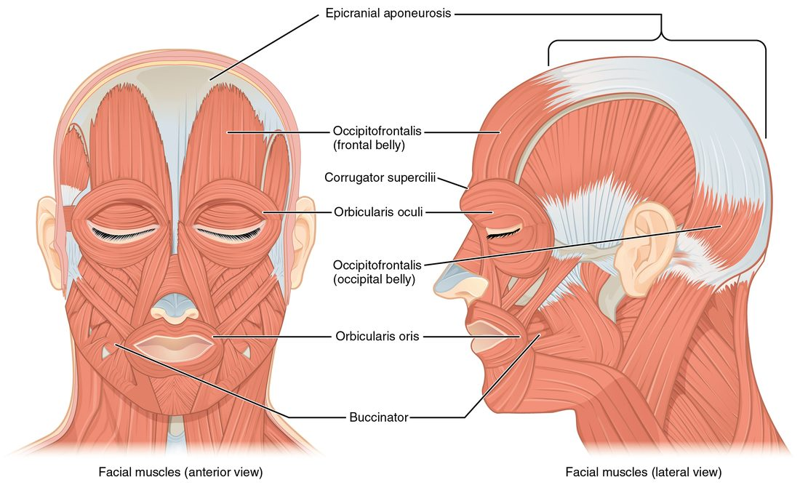

Muscles of the head and neck
Facial expression muscles insert into skin: the occipitofrontalis raises the eyebrows, the orbicularis oculi and orbicularis oris close the eye and lips, the zygomaticus major smiles, and the buccinator presses the cheek to the teeth.
Part 1 · Clinical hook
Why this matters
Ms. Alvarez, 45, wakes up and sees in the mirror that the right side of her face has dropped. She cannot raise her right eyebrow or close her right eye fully, her smile pulls to the left, and coffee dribbles from the right corner of her mouth. She can still chew hard food normally. Every one of those signs points to a named facial muscle, and the chewing muscles are spared.
Part 2 · Foundations
What this builds on
Part 3 · Prerequisite check
Quick check before you start
1. Which bone is the lower jaw?
- Maxilla
- Mandible
- Zygomatic bone
Show the answer
The mandible is the lower jaw, the only movable bone of the skull. The maxilla forms the upper jaw, and the zygomatic bone is the cheekbone.
- Maxilla:
- Correct: Mandible:
- Zygomatic bone:
2. What is special about the hyoid bone?
- It forms a joint with the mandible
- It forms no joint with any other bone
- It is part of the cervical vertebrae
Show the answer
The hyoid hangs in the neck from muscles and ligaments and forms no joint with any other bone.
- It forms a joint with the mandible:
- Correct: It forms no joint with any other bone:
- It is part of the cervical vertebrae:
3. The name "sternohyoid" tells you what about the muscle?
- Its shape
- Its attachments: from the sternum to the hyoid
- Its number of heads
Show the answer
Muscle names often list the attachments, origin first. The sternohyoid runs from the sternum to the hyoid bone.
- Its shape:
- Correct: Its attachments: from the sternum to the hyoid:
- Its number of heads:
Part 4 · Anatomy panel
Anatomy

With labels hidden, select a box to reveal its label.
Part 5 · Causal chain
How it works, step by step
- A facial muscle originates on a skull bone and inserts into the skin.When it contracts, it pulls the skin toward the bone, changing your expression rather than moving a joint.
- The chewing muscles originate on the skull and insert on the mandible.Their pull moves the mandible at the temporomandibular joint.
- Three of the four chewing muscles (masseter, temporalis, medial pterygoid) pull the mandible up.Closing the jaw is strong, and biting force is high.
- Opening relies on the lateral pterygoids, the suprahyoid muscles and gravity.Opening the jaw is much weaker than closing it.
- During a swallow the suprahyoid muscles pull the hyoid up, and then the infrahyoid muscles pull it down.The hyoid and the voice box rise and fall with every swallow.
Part 6 · Core concept
Core concepts
Part 7 · Misconception
A common mistake
The wrong idea: The buccinator is a chewing muscle, because it helps you chew.
What actually happens: The buccinator inserts into the lips and cheek, not the mandible, so it cannot move the jaw. It is a muscle of facial expression: it presses the cheek against the teeth, keeping food on the teeth while the true chewing muscles (masseter, temporalis and the two pterygoids) move the mandible.
Part 8 · Retrieval check
Check yourself
Anything you miss goes into your review queue.
1. Name the pinned muscle.
- Orbicularis oris
- Orbicularis oculi
- Occipitofrontalis, frontal belly
- Temporalis
Show the answer
The ring of muscle around the eye is the orbicularis oculi. It closes the eyelids.
- Orbicularis oris: The orbicularis oris is the ring around the mouth, not the eye.
- Correct: Orbicularis oculi: Correct. The ring around the eye is the orbicularis oculi.
- Occipitofrontalis, frontal belly: The frontal belly of the occipitofrontalis lies over the forehead, above the eye; it raises the eyebrows rather than closing the eye.
- Temporalis: The temporalis is a chewing muscle on the side of the skull, under the scalp, not around the eye.
2. Name the pinned chewing muscle.
- Temporalis
- Buccinator
- Medial pterygoid
- Masseter
Show the answer
The masseter runs from the zygomatic arch down to the outer surface of the angle of the mandible. It is the prime mover of jaw closing.
- Temporalis: The temporalis fans over the side of the skull above the ear, not over the angle of the jaw.
- Buccinator: The buccinator lies forward in the cheek wall and moves the cheek, not the jaw.
- Medial pterygoid: The medial pterygoid inserts on the inner surface of the angle of the mandible, hidden from this outside view.
- Correct: Masseter: Correct. The thick muscle over the angle of the jaw is the masseter.
3. Name the pinned muscle on the side of the neck.
- Anterior and middle scalenes
- Omohyoid
- Sternocleidomastoid
- Digastric
Show the answer
The sternocleidomastoid runs from the manubrium and medial clavicle up and back to the mastoid process behind the ear.
- Anterior and middle scalenes: The scalenes lie deeper and lower on the side of the neck, running from the cervical vertebrae to the first two ribs.
- Omohyoid: The omohyoid is a thin infrahyoid strap muscle running from the scapula to the hyoid.
- Correct: Sternocleidomastoid: Correct. The long diagonal muscle from sternum and clavicle to the mastoid process is the sternocleidomastoid.
- Digastric: The digastric is a suprahyoid muscle under the jaw.
4. Ms. Alvarez, 45, wakes with the right side of her face drooping. She cannot close her right eye completely, and food keeps collecting between her right cheek and her teeth when she eats. Weakness of which two muscles best explains these two problems?
- Masseter and temporalis
- Frontalis and zygomaticus major
- Orbicularis oculi and buccinator
- Medial and lateral pterygoid muscles
Show the answer
The orbicularis oculi closes the eyelids, so its weakness leaves the eye partly open. The buccinator presses the cheek against the teeth and pushes food back onto them, so its weakness lets food collect in the cheek.
- Masseter and temporalis: The masseter and temporalis close the jaw. Weakness would make biting weak, not keep the eye open or let food pocket in the cheek.
- Frontalis and zygomaticus major: The frontalis raises the eyebrow and the zygomaticus major lifts the corner of the mouth. Neither closes the eye or clears the cheek.
- Correct: Orbicularis oculi and buccinator: Correct. The eye sphincter and the cheek muscle explain both problems.
- Medial and lateral pterygoid muscles: The pterygoids move the jaw forward and side to side. They do not close the eye or press the cheek to the teeth.
5. Only the right sternocleidomastoid contracts. What happens to the head?
- It tilts toward the right shoulder and the face turns to the left
- It tilts toward the left shoulder and the face turns to the right
- The chin drops straight down to the chest
- The head tips straight back
Show the answer
The muscle pulls the mastoid process toward the sternum and clavicle on the same side. That tilts the head toward the right shoulder and, because the mastoid is behind the ear, swings the face toward the left.
- Correct: It tilts toward the right shoulder and the face turns to the left: Correct. Same-side tilt, opposite-side turn.
- It tilts toward the left shoulder and the face turns to the right: This describes the left sternocleidomastoid.
- The chin drops straight down to the chest: Straight neck flexion needs both sternocleidomastoids contracting together.
- The head tips straight back: Tipping the head back is extension, done mainly by muscles at the back of the neck.
6. Which muscles elevate the mandible, closing the jaw? Select all that apply.
- Masseter
- Temporalis
- Lateral pterygoid
- Buccinator
- Digastric
Show the answer
The masseter and temporalis insert on the mandible and pull it up. The lateral pterygoid and the suprahyoid muscles, such as the digastric, help open the jaw instead, and the buccinator holds food against the teeth.
- Correct: Masseter: Yes. The masseter is the prime mover of jaw closing.
- Correct: Temporalis: Yes. The temporalis elevates and retracts the mandible.
- Lateral pterygoid: The lateral pterygoid pulls the mandible forward and helps open the jaw.
- Buccinator: No. The buccinator is a muscle of facial expression: it presses the cheek to the teeth but does not move the jaw.
- Digastric: No. The digastric is a suprahyoid muscle; with the hyoid held still it pulls the mandible down, opening the mouth.
7. During a swallow, the hyoid bone and voice box rise and then drop back down. Which muscle groups produce the rise and the fall?
- Infrahyoid muscles raise them; suprahyoid muscles lower them
- Suprahyoid muscles raise them; infrahyoid muscles lower them
- Scalenes raise them; sternocleidomastoids lower them
- Masseters raise them; gravity alone lowers them
Show the answer
The suprahyoid muscles run from the hyoid up to the mandible and skull, so they pull it up. The infrahyoid muscles run from the hyoid down to the sternum, voice box and scapula, so they pull it back down.
- Infrahyoid muscles raise them; suprahyoid muscles lower them: This reverses them. Muscles below the hyoid pull it down, not up.
- Correct: Suprahyoid muscles raise them; infrahyoid muscles lower them: Correct. Above pulls up, below pulls down.
- Scalenes raise them; sternocleidomastoids lower them: The scalenes attach to the vertebrae and ribs, and the sternocleidomastoids to the sternum, clavicle and mastoid. Neither attaches to the hyoid.
- Masseters raise them; gravity alone lowers them: The masseters attach the zygomatic arch to the mandible and never reach the hyoid; muscles below the hyoid actively pull it down.
Part 9 · Summary
Summary
Facial expression muscles insert into skin: the occipitofrontalis raises the eyebrows, the orbicularis oculi and orbicularis oris close the eye and lips, the zygomaticus major smiles, and the buccinator presses the cheek to the teeth. The chewing muscles insert on the mandible: the masseter, temporalis and medial pterygoid close the jaw, and the lateral pterygoid protracts it and helps open it. One sternocleidomastoid tilts the head to its side and turns the face to the other side; both flex the neck. The scalenes lift the first two ribs. Suprahyoid muscles raise the hyoid and help open the jaw; infrahyoid muscles lower and steady it.
Part 10 · Up next
What comes next
Part 11 · Connections